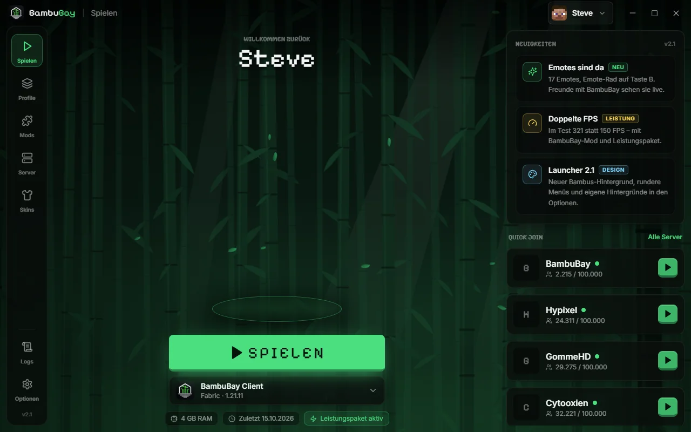

Der Minecraft-Client aus dem Bambuswald.
Launcher und Mod in einem: mehr FPS, Cosmetics, Emotes, Freunde und BambuGram. Kostenlos für alle.

Maus bewegen zum DrehenAlles im Client. Ohne Extra-Mods.
Alles, was andere BambuBay-Spieler betrifft, sehen sie auch: Cosmetics, Emotes, Namens-Stile und deine Beiträge.
Der Launcher. Schau rein.
Ein Klick auf Spielen: Minecraft, Fabric, die BambuBay-Mod und das Leistungspaket werden automatisch eingerichtet.
Neu im Client.
Jedes neue Feature landet hier, sobald es fertig ist.
Jetzt loslegen.
Am einfachsten mit dem Launcher. Wer schon einen anderen Launcher nutzt, nimmt nur die Mod.
BambuBay Launcher
Für Windows. Installiert Minecraft 1.21.11, Fabric und die Mod, hält alles aktuell und startet mit einem Klick.
- ZIP herunterladen und entpacken.
- Setup starten und installieren.
- Mit deinem Microsoft-Konto anmelden, Spielen klicken.
BambuBay-Launcher-2.1.0.zip · 13,8 MB
Nur die Mod
Für Prism, Modrinth und andere Launcher. Braucht Fabric Loader und Fabric API für Minecraft 1.21.11.
- ZIP entpacken.
- Die .jar in den Ordner „mods“ legen.
- Im Spiel öffnet Rechte Shift das Menü.
BambuBay-Mod-2.0.0.zip · 10,5 MB
Du brauchst Minecraft: Java Edition. Windows SmartScreen kann vor dem unsignierten Setup warnen: „Weitere Informationen“, dann „Trotzdem ausführen“.